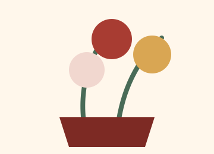

祝禱敬獻
好神花
適合廟宇敬神、祈福、祝禱與重要祭祀場合，以飽滿花型與穩重色彩表達虔誠敬意。
About
紙語紙境相信，紙作承載的不只是形式，更是祝福、感謝、思念與敬意。我們以細緻紙藝結合傳統禮俗，為廟宇敬獻、神明祝壽、追思祭拜等場合，準備合宜且有溫度的作品。
Products

適合廟宇敬神、祈福、祝禱與重要祭祀場合，以飽滿花型與穩重色彩表達虔誠敬意。

為告別、追思、祭拜與紀念準備的花禮，溫柔不張揚，讓思念被安放得更妥貼。

適合神明聖誕、祝壽與宮廟慶典，可依神明、尺寸與祝賀語規劃整體呈現。
Contact
可先提供商品項目、用途、日期、地點與預算，我們會協助挑選合適款式。